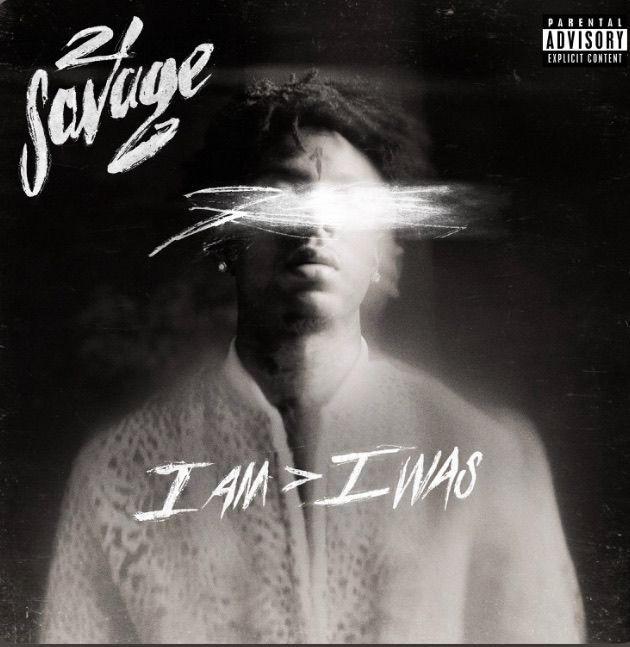
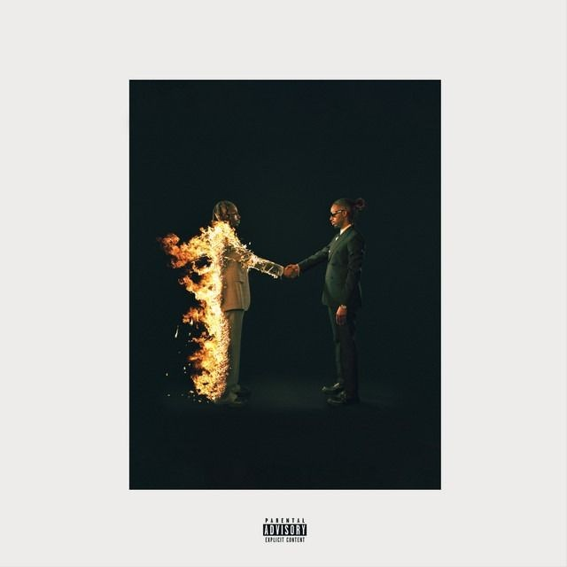
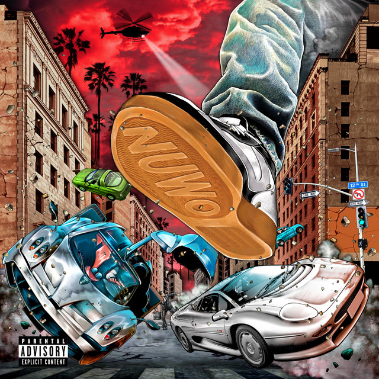
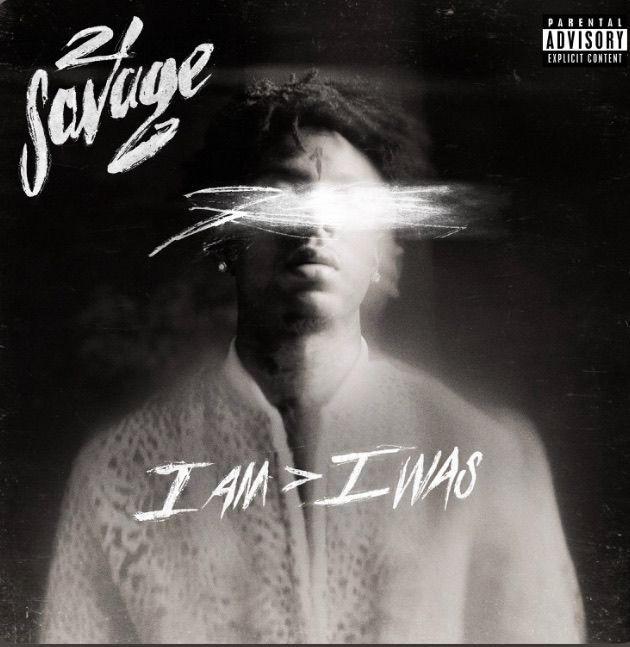
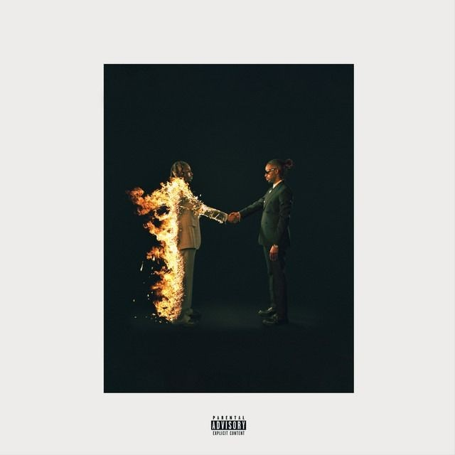
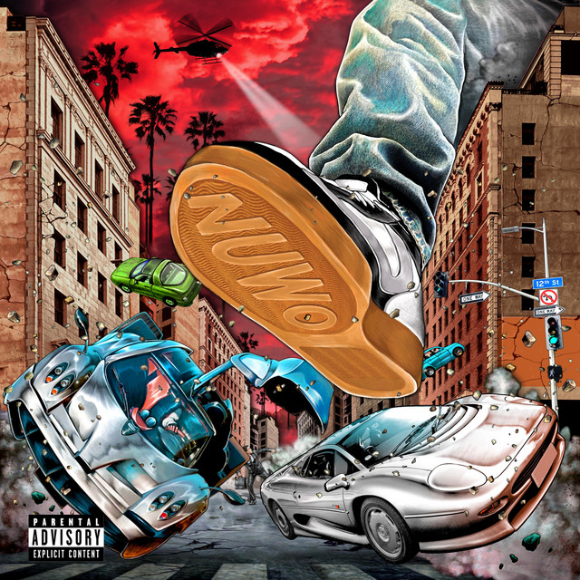

Le Rap Américain
Le rap américain est un genre musical né dans les années 70 dans le Bronx, à New York, qui mélange poésie, rythme, et culture de rue. Il a rapidement évolué, influencé par des thèmes de lutte, de survie, de fête, et d'aspiration sociale, avec des sous-genres allant du gangsta rap (par N.W.A et Tupac) au rap conscient (comme celui de Nas ou Kendrick Lamar) jusqu’au trap actuel (comme celui de Travis Scott et Future).
  I was"
/>


 I was"
/>

